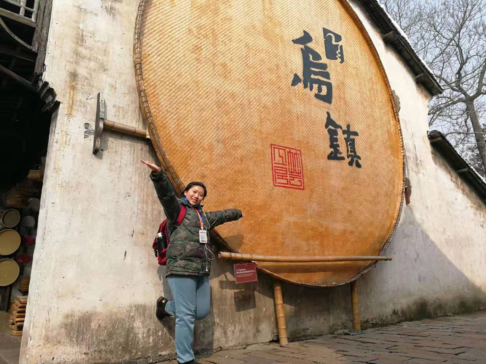
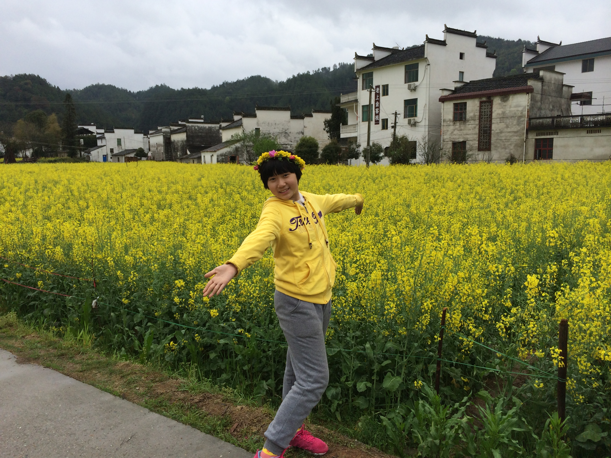

Hello everybody,my name is Sarah.I am a 17 year-old girl who loves writing Chinese calligraphy deeply.And I come from Beijing,China.


My favorite food is hotpot.And I am crazy about Chinese green tea since it involves traditional Chinese tea culture.Now I am a senior 2 student and I chose history,politics and chemistry to study for my college entrance exams.The subject which I love most is history because I can always find something interesting about that particular period of time.
In the future,I plan to choose a major in relation to finance and managements.And I hope I will have the opportunity to study them in NYU ShangHai.:) If you are intererted in my reasons, check it out here!